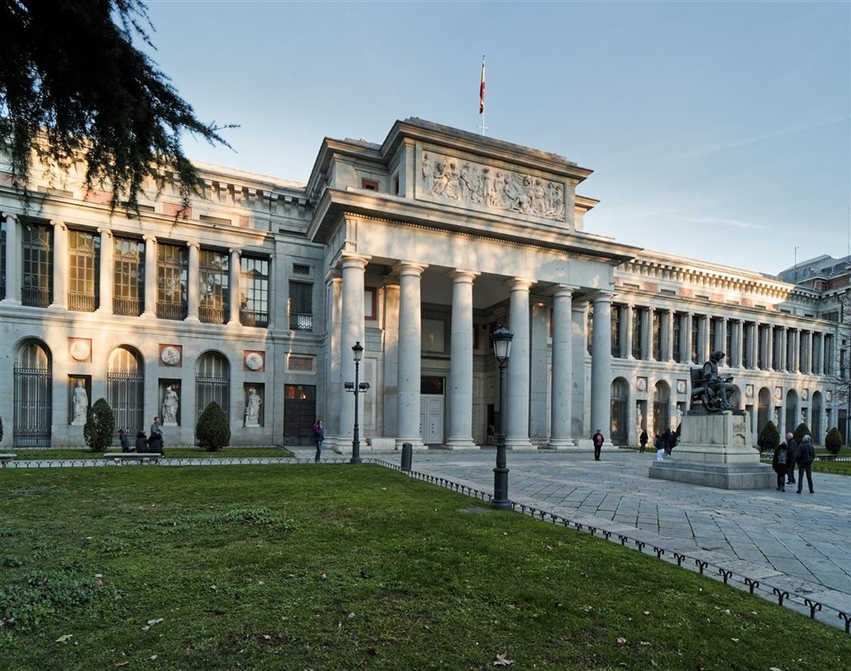

Tag 2: Museen, die man in Madrid besuchen muss
Wir haben jetzt einige der Sehenswürdigkeiten der Stadt gesehen. Jetzt muss man sich an die wichtigsten Mussen der Stadt wagen. Es gibt drei Museen in Madrid, die als unverzichtbar gelten: Prado-Museum, Reina Sofía und Museo Nacional Thyssen-Bornemisza. Sie können mit dem Museum den Sie wollen anfangen.
Museo del Prado
Der Prado beherbergt Weke von berühmten spanischen Künstlern und anderen Künstlern wie Rubens, Bruegel, Van Dyck und Bosch. Es gibt bis zu 1500 Werke, die man sich anschauen kann, wobei Weke von Velázquez, Goya und Tizian hervorragen. Hier befindet sich auch eines der berühmtesten Werke von Velázquez: Las meninas. Mehr Information gibt es auf der Webseite.
Museo Reina Sofía
In diesem Museum kann man die Gemälde von zwei der bedeutendsten Künstler des 20. Jahrhunderts sehen: Picasso und Dalí, darunter auch das rieseige Antikriegswandbild Guernica von Picasso. Mehr Information gibt es auf der Webseite.
Museo Nacional Thyssen-Bornemisza Madrid
Das Museum füllt die Lücken, die die Reina Sofia und der Prado hinterlassen haben, mit Werken der Impressionisten und Expressionisten sowie mit Werken der deutschen und englischen Schule. Mehr Information gibt es auf der Webseite.
Essen
Es ist Zeit um eine Pause einzulegen! Wenn man sich ein- oder zwei der Museen angeguckt haben, kann man erst etwas essen gehen. In diesem Stadtteil gibt es besonders viele Tapas-Bare wo man mit einem Getränk eine Tapa mitbestellen kann. Die Favoriten sind:
- Huevos rotos: Spiegeleier auf Pommes, manchmal gibt es auch Schinken, Blutwurst oder Paprikawurts dazu.
- Patatas bravas: In Würfeln geschnittene Kartoffeln mit einer etwas scharfer Sosse.
- Croquetas: Eines der beliebtesten Gerichte, sei aus Schinken, Käse oder Kabeljau sind Kroketten eine der besten Optionen.


Der Nachmittag
Am Nachmittag kann man sich die anderen Museen angucken. Ein interesantes Museum ist der Museo Naval (Schiffsmuseum), wo einige Schiffsmodelle ausgestellt sind und über Christoph Kolumbus Reisen nach Amerika berichtet wird. Man kann alternariv auch ein Spaziergang durch den Paseo del Prado machen, eine 1km lange Strasse wo sich einiges befindet:
- Die Plaza Cibeles wo der Real Madrid seine grossen Siege feiert und das Rathaus der Stadt steht und die Plaza Neptuno, wo der Atletico seine Siege feiert.
- Iglesia de los Jerónimos: Das ist eine sehr schöne Kirche neben dem Prado Museum. Diese Kirche wurde im XVI Jahrhundert errichtet.
- Botanischer Garten: Man kann diesen sehr grossen Garten auch besichtigen, was einen interessanten Nachmittag verspricht.
- Wenn man am Ende der Strasse gelangt kann man sich den Atocha Bahnhof angucken.
Die Plaza Cibeles
Die Plaza de Neptuno


Ende des Tages
Vor dem Bahnhof gibt es ein sehr berühmtes Restaurant wo das Spezialgericht der Bocata de Calamares ist. Auch wenn man vielleicht am ersten Tag eins gegessen hat, ist es wert diese zu probieren. Sie haben auch andere Teller, die man bestellen kann und traditionelle Gerichte sind. Danach kann man die Linie 1 der Metro in Atocha nehmen oder in Lavapiés die Linie 3 nehmen. Lavapiés ist auch eines der bekanntesten Viertel der Stadt. Ein Spaziergang durch seine engen Strassen, deren Form vom Mittelalrer stammt, ist es wert.